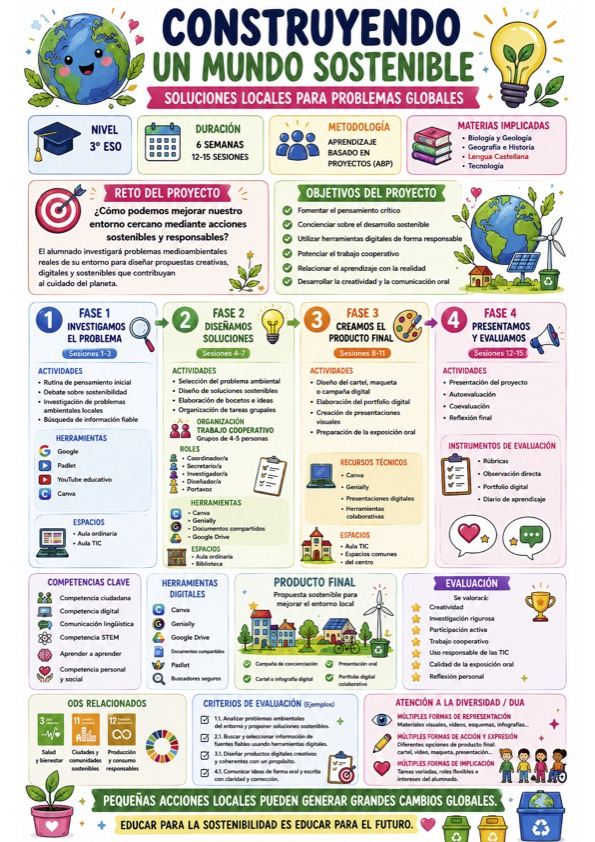

Texto
📅 Actividades y línea temporal.
El proyecto se desarrollará a lo largo de varias sesiones mediante una metodología activa y cooperativa basada en el Aprendizaje Basado en Proyectos (ABP).
Las actividades estarán organizadas en diferentes fases que permitirán al alumnado investigar, crear, colaborar y presentar soluciones sostenibles relacionadas con su entorno cercano.
🌱 Fases del proyecto
🔎 Fase 1. Investigación
Análisis de problemas medioambientales.
Búsqueda de información fiable.
Debate y reflexión inicial.
💡 Fase 2. Diseño de propuestas
Creación de ideas sostenibles.
Organización del trabajo cooperativo.
Elaboración de bocetos.
🎨 Fase 3. Creación del producto final
Diseño de campañas e infografías.
Creación de presentaciones digitales.
Elaboración del portfolio digital.
🎤 Fase 4. Exposición y evaluación
Presentación de proyectos.
Autoevaluación y coevaluación.
Reflexión final del aprendizaje.
